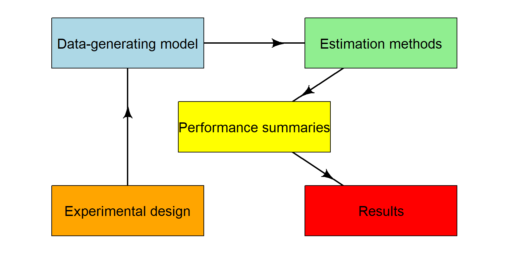

Chapter 3 Structure of a simulation study
In the prior chapter we saw a simple simulation evaluation of a \(t\)-test. We next break that simulation down into components, and then in the subsequent chapters we dig into how to think about each component.
3.1 General structure of a simulation
The easiest way to evaluate an estimator is to generate some data from scratch, generating it in such a way that we know what the ``right answer’’ is, and then to analyze our data using our estimators we wish to study. We then check to see if the estimators got the right answer. We can write down how close the estimators got, whether the estimators were too high or too low, and so forth. We can also use the estimators to conduct a hypothesis test, testing the hypothetical null, and we can write down whether we rejected or did not reject this null.
If we do this once, we have some idea of whether the estimators worked in that specific example, but we don’t know if this is due to random chance. To assess general trends, therefore, we repeat this process over and over, keeping track of how well our estimators did in each trial. We finally aggregate our results, and see if one estimator systematically outperformed the other.
If we want to know if an estimator is generally superior to another, we can generate data from a variety of different scenarios, seeing if the estimator is systematically winning across simulation contexts. If we do this in a a structured and thoughtful manner, we can eventually make claims as to the behaviors of our estimators that we are investigating.
A simulation study can be thought of as something like a controlled scientific experiment: we want to understand the properties of our estimators, so we put them in a variety of different scenarios to see how they perform. We then look for general trends across these scenarios in order to understand general patterns of behavior of our estimators.
In particular, a simulation would be the following steps:We might then systematically repeat the above for a series of different scenarios to generalize our findings.
As we saw in our initial example, the logic of simulation is, for a specific and specified scenario scenario:
Generate a sample of data based on a specified statistical model/process.
Analyze data using one or more procedures/workflows.
Repeat (1) & (2) \(R\) times.
Summarize the performance of the procedure across our \(R\) repetitions.
We will then do this for a series of scenarios, so we can see how performance changes as we chance circumstance. But first, let’s just focus on a single scenario.
3.2 Tidy simulations
In general, we advocate for writing tidy simulations, meaning we keep all the components of a simulation separate. The main way to keep things tidy is to follow a modular approach, in which each component of the simulation is implemented as a separate function (or potentially a set of several functions). Writing separate functions for the different components of the simulation will make the code easier to read, test, and debug. Furthermore, it makes it possible to swap components of the simulation in or out, such as by adding additional estimation methods or trying out a data-generating model that involves different distributional assumptions. In particular, we write separate functions for each step of the simulation, and then wire these functions together at the end. In code, we can start with the skeletons of:
# Generate
generate_data <- function(params) {
# stuff
}
# Analyze
analyze <- function(data) {
# stuff
}
# Repeat
one_run <- function() {
dat <- generate_data(params)
analyze(dat)
}
results <- rerun(R, one_run())
# Summarize
assess_performance <- function(results) {
# stuff
}To repeat, this approach has several advantages:
Easier to check & debug.
Easier to modify your code.
Easier to make everything run fast.
Facilitates creative re-use.
In fact, the simhelpers package will build these skeletons (along with some other useful code to wire the pieces together) via the create_skeleton() method.
simhelpers::create_skeleton()Starting with this, you will already be well on the road to writing a tidy simulation.
3.2.1 Data-generating model
The data-generating model takes a set of parameter values as input and generates a set of simulated data as output. When we generate data, we control the ground truth! This allows us to know what the answer is, so we know if our methods are doing the right thing.
3.2.2 Estimation methods
The estimation methods consist of the set of statistical procedures under examination. Each method takes a dataset and produces a set of estimates or results (i.e., point estimates, standard errors, confidence intervals, p-values, etc.). You might have different functions for each estimation method you are investigating. Our estimation methods should, in principle, work on real data as well as simulated data; the more we can “black box” these into a single function call, the easier it will be to separate out the structure of the simulation and the complexity of the methods being evaluated.
3.2.3 Repetition
There are a variety of ways in R to do something over and over.
The one above, rerun does exactly what it sounds like: repeatidly run the line of code a given number of times.
Making a helper method such as one_run() makes debugging our simulations a lot, lot easier.
This one_run() method is like the coordinator or dispatcher of our system: it generates the data, calls all the evaluation methods we want to call, combines all the results, and hands them back for recording.
We will usually stack all our returned results into one large dataframe of simulation results to ready it for the next step, which is assessing performance.
3.2.4 Performance summaries
Performance summaries are the metrics used to assess the performance of a statistical method. Interest usually centers on understanding the performance of a method over repeated samples from a data-generating process. For example, we might want to know how close our estimator gets to the target parameter, on average. Or we might want to know if a confidence interval captures the truth the right amount of time. To estimate these quantities we repeat steps 2 and 3 many times to get a large number of simulated estimates. We then summarize the distribution of the estimates to characterize performance of a method.
3.3 Multiple Scenarios
The above gives a breakdown for running a simulation for a single context. In our \(t\)-test case study, for example, we might ask how well the \(t\)-test works when we have \(n=100\) units and an exponential distribution to our data. But we rarely want to example a single context, but instead want to explore how well a procedure works across a range of contexts.
We again use the principles of modular coding: we write code to do a single scenario (and wrap that in a function), and then call that function for all the scenarios we wish. This is a type of designed experiment, in which factors such as sample size and true parameter values are systematically varied. In fact, simulation studies typically follow a full factorial design, in which each level of a factor (something we vary, such as sample size, true treatment effect, or residual variance) is crossed with every other level. The experimental design then consists of sets of parameter values (including design parameters, such as sample sizes) that will be considered in the study. We discuss this after we more fully develop the core concepts listed above.
3.4 Keeping the pieces organized
The above presents a simulation study as having five main components:
## Warning: `data_frame()` was deprecated in tibble 1.1.0.
## Please use `tibble()` instead.
## This warning is displayed once every 8 hours.
## Call `lifecycle::last_lifecycle_warnings()` to see where this warning was generated.
The code we write to implement simulations should follow this same structure, with different functions corresponding to each component.
In our methodological work, we try to always follow the same workflow when writing simulations. We make no claim that this is the only or best way to do things, but it does work for us.
To write a simulation we start by making a template via the simhelpers package:
library(simhelpers)
create_skeleton()This function will open up a new R script for you contains a template for a simulation study, with sections corresponding to each component.
3.5 Further readings & resources
Morris, White, & Crowther (2019). Using simulation studies to evaluate statistical methods.
- High-level simulation design considerations.
- Details about performance criteria calculations.
- Stata-centric.
SimDesign R package (Chalmers, 2019)
- Tools for building generic simulation workflows.
- Chalmers & Adkin (2019). Writing effective and reliable Monte Carlo simulations with the SimDesign package.
DeclareDesign (Blair, Cooper, Coppock, & Humphreys)
- Specialized suite of R packages for simulating research designs.
- Design philosophy is very similar to “tidy” simulation approach.
SimHelpers R package (Joshi & Pustejovsky, 2020)
- Helper functions for calculating performance criteria.
- Includes Monte Carlo standard errors.